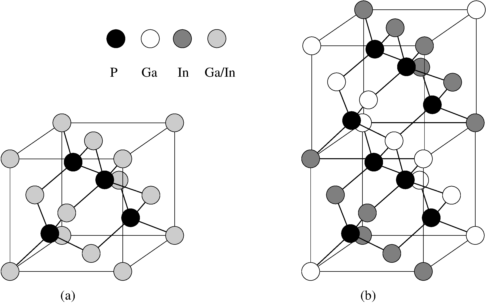
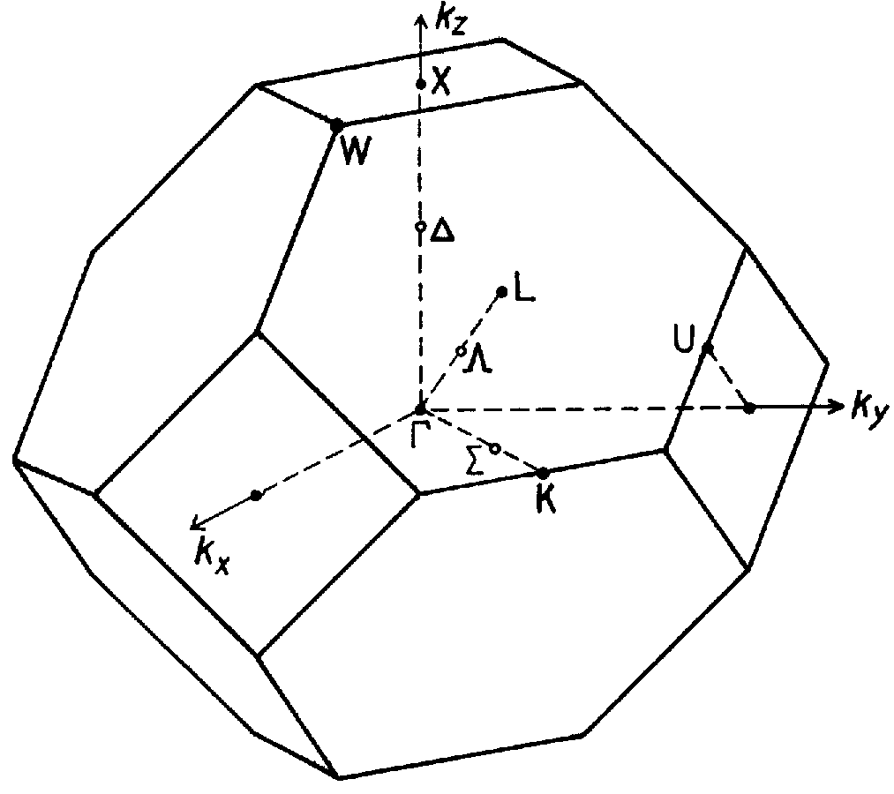
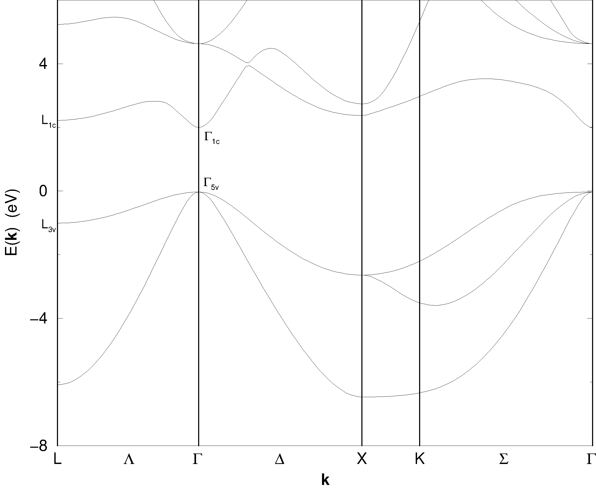
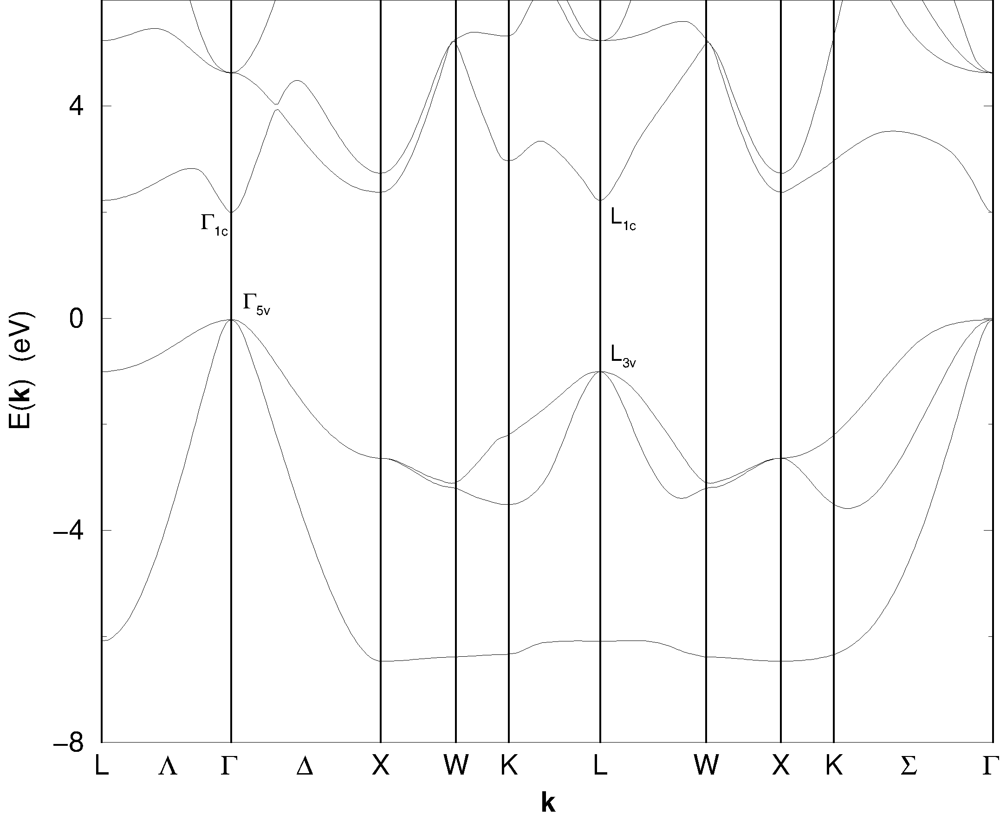
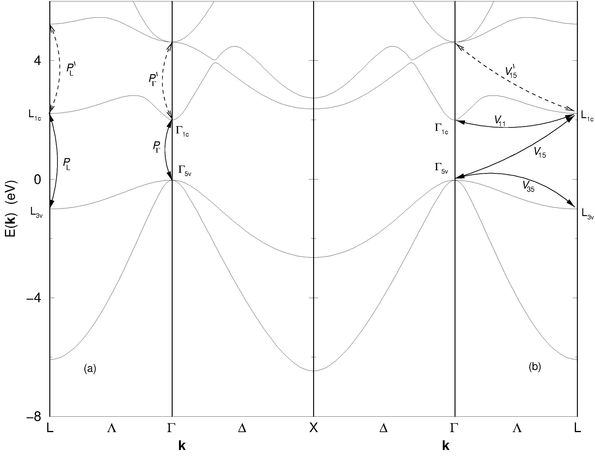

3 Anwendung auf geordnetes GaInP₂
In diesem Kapitel soll gezeigt werden, wie sich die in ?sec-periodstoer abgeleitete Theorie auf ein konkretes Problem, die effektive Masse der Elektronen im Leitungsband von (teil-)geordnetem GaInP₂, anwenden läßt.
3.1 Allgemeines zum Materialsystem
Viele III–V-Halbleiterlegierungen A_{x}B_{1-x}C mit Kationen A und B zeigen spontane, langreichweitige CuPt-Ordnung, wenn sie mit metallorganischer Gasphasen-Epitaxie [metalorganic vapour phase epitaxy (MOVPE)] auf (001)-orientierten Substraten gewachsen werden [Zunger und Mahajan (1994)]. Die geordnete Phase besteht aus abwechselnden Monolagen A_{x+\eta/2}B_{1-x-\eta/2}C und A_{x-\eta/2}B_{1-x+\eta/2}C, die längs der $[111]$$-Richtung angeordnet sind. Dabei ist 0 \le \eta \le 1 der Ordnungsgrad. Die [111]-Richtung wird als Ordnungsrichtung bezeichnet.1
Ein prominentes Beispiel für diese Materialien ist Ga_{x}In_{1-x}P. Mit GaInP₂ wollen wir den Fall x \approx 0.5 bezeichnen, der gitterangepaßt auf GaAs Substraten aufgewachsen werden kann [Kippenberg (1997)]. Ein Vergleich der mikroskopischen Struktur der ungeordneten Zinkblende-Struktur und einem CuPt-geordneten Material ist in Abb. 3.1 zu sehen.

Abb. 3.1(b) zeigt den Fall idealer Ordnung, d.h. Ordnungsgrad \eta=1. Allerdings wurden im Experiment bisher nur teilgeordnete Proben gefunden. Das bedeutet \eta < 1, so daß auf aufeinanderfolgenden (111)-Ebenen die Wahrscheinlichkeit abwechselnd erhöht (erniedrigt) und erniedrigt (erhöht) ist, ein Ga (In) Atom zu finden. Dabei hängt der Ordnungsgrad von verschiedenen Wachstumsbedingungen wie Temperatur und Substratorientierung ab.

Beim Übergang vom ungeordneten (\eta=0) Zinkblende-System zu einem CuPt-geordneten Kristall wird die Einheitszelle verdoppelt und damit die Brillouin-Zone halbiert. Die Punktgruppe des Kristalls reduziert sich von T_d zu C_{3v}.2 Diese Verkleinerung der Brillouin-Zone bewirkt ein Zurückfalten von Zuständen. An jedem Punkt der neuen Brillouin-Zone finden sich Zustände, die sich ursprünglich an zwei verschiedenen Punkten der Brillouin-Zone des Zinkblende-Gitters befanden. Die für uns interessanten Zustände befinden sich im Zentrum der neuen Brillouin-Zone. Der eine Teil der dort zu findenden Zustände war auch im Zinkblende-Gitter schon am \Gamma-Punkt. Der andere Teil faltet von dem L-Punkt zurück, der in Ordnungsrichtung liegt.3
Dies führt zu einer ganzen Reihe von Effekten, von denen wir die wichtigsten hier behandeln wollen. Zwei der auffälligsten sind die Reduzierung der Bandlücke um \Delta E_{\text{BGR}} und die Kristallfeldaufspaltung \Delta_{\text{CF}}. Letzteres bedeutet, daß das ohne Spin-Bahn-Wechselwirkung dreifach entartete {\Gamma_{5 \text{v}}}-Valenzbandmaximum in einen zweifach entarteten {\bar \Gamma_{3 \text{v}}} ({\Gamma_{5 \text{v}}})-Zustand und einen einfach entarteten {\bar \Gamma_{1 \text{v}}} ({\Gamma_{5 \text{v}}})-Zustand aufspaltet.4
Wird die Spin-Bahn-Wechselwirkung berücksichtigt, so zeigt sich die Kristallfeldaufspaltung in einer Aufhebung der vierfachen Entartung des \Gamma_{\text{8v}} Valenzbandes. Die sich hier ergebende Aufspaltung entspricht nicht der Kristallfeldaufspaltung. Aus der Valenzbandaufspaltung läßt sich aber die Kristallfeldaufspaltung berechnen, wenn für die Spin-Bahn-Wechselwirkung die quasikubische Näherung gemacht wird [Bir und Pikus (1974)], bei der eine von der Symmetrie her mögliche Anisotropie in der Spin-Bahn-Wechselwirkung vernachlässigt wird.
Theoretische Vorhersagen [Wei und Zunger (1998)] und Messungen [Fluegel u. a. (1997); Forrest u. a. (1998)] haben gezeigt, daß zwischen Bandlückenreduzierung \Delta E_{\text{BGR}} und Kristallfeldaufspaltung \Delta_{\text{CF}} eine vom Ordnungsgrad unabhängige Beziehung herrscht. Für GaInP₂ finden diese Autoren
\zeta_{\text{theo}} = \frac{\Delta E_{\text{BGR}}}{\Delta_{\text{CF}}} = 2{,}69 \quad \text{bzw.} \quad \zeta_{\text{exp}} \approx 2{,}65 . \qquad(3.1)
Weiterhin sind in (teil-)geordnetem GaInP₂ optische Übergänge möglich, die im ungeordneten Fall dipolverboten sind. Einer von diesen ist der Übergang {\bar \Gamma_{3 \text{v}}}({\Gamma_{5 \text{v}}}) \rightarrow {\bar \Gamma_{1 \text{c}}}({\text{L}_{1 \text{c}}}), der vor kurzem genauer untersucht wurde [@kksk:99]. Trägt man die Übergangsenergie als Funktion der Bandlückenreduzierung auf, so ergibt sich eine Gerade mit Steigung \theta = 0,48. Es besteht also ein eindeutiger Zusammenhang zwischen dem Ordnungsgrad, repräsentiert durch die Bandlückenreduzierung \Delta E_{\text{BGR}}, und der Änderung \Delta E_{\Gamma \rightarrow \text{L}} der Energie des Übergang {\bar \Gamma_{3 \text{v}}}({\Gamma_{5 \text{v}}}) \rightarrow {\bar \Gamma_{1 \text{c}}}({\text{L}_{1 \text{c}}}), gegeben durch
\theta = \frac{\Delta E_{\Gamma \rightarrow \text{L}}} {\Delta E_{\text{BGR}}} = 0{,}48 . \qquad(3.2)
3.2 Beschreibung der effektiven Massen im Leitungsband
Die bisher erwähnten Untersuchungen beschäftigten sich nur mit den Energien verschiedener Zustände in Abhängigkeit vom Ordnungsgrad, d.h. mit statischen Eigenschaften. Eine wichtige Größe bei der Beschreibung dynamischer Eigenschaften – z.B. Transportphänomenen – sind die effektiven Massen der Elektronen im Valenz- und Leitungsband.
Als erste versuchten Raikh und Tsiper (1994), die effektive Masse im Leitungsband über die Kopplung zwischen den Bändern {\Gamma_{1 \text{c}}} und {\text{L}_{1 \text{c}}} im Rahmen einer Effektive-Massen-Näherung zu beschreiben. Das unbekannte Matrixelement für diese Kopplung paßten sie dabei an beobachtete Bandlückenreduzierungen an, da {\text{L}_{1 \text{c}}} energetisch höher liegt als {\Gamma_{1 \text{c}}} und die Kopplung zu einer Abstoßung dieser Zustände führt. Außerdem mischen die Zustände auf Grund dieser Kopplung. Da die effektiven Massen von {\text{L}_{1 \text{c}}} anisotrop und größer als bei {\Gamma_{1 \text{c}}} sind, ergibt sich mit diesem Modell die Vorhersage eines Anstiegs der effektiven Masse im untersten Leitungsband als Funktion des Ordnungsgrades. Dabei sollte der Anstieg parallel zur Ordnungsrichtung größer sein als senkrecht zu ihr, also m^{\ast}_{\parallel} > m^{\ast}_{\perp} > m^{\ast}_{\text{c}}. Hier bezeichnet m^{\ast}_{\text{c}} die isotrope effektive Masse von {\Gamma_{1 \text{c}}}, m^{\ast}_{\parallel} die effektive Masse parallel zur Ordnungsrichtung und m^{\ast}_{\perp} die effektive Masse senkrecht zur Ordnungsrichtung.
Problematisch bei diesem Ansatz ist, daß die Bandlückenreduzierung zu einer Verstärkung der Wechselwirkung zwischen Valenzbandmaximum und Leitungsbandminimum führt, was eine Reduzierung der effektiven Masse im Leitungsband zur Folge hat. Dies wurde von @zhma:95 untersucht. Ausgehend von einem acht Bänder (\Gamma_{\text{6c}}, \Gamma_{\text{8v}}, \Gamma_{\text{7v}}) umfassenden \bm{k}\cdot \bm{p}-Hamilton-Operator für den ungeordneten Kristall, berücksichtigten sie die Ordnungseffekte durch zwei Parameter, welche die Bandlückenreduzierung und Kristallfeldaufspaltung beschreiben.5 Sie erhielten damit eine reduzierte effektive Masse im Leitungsband. Bedingt durch die Kristallfeldaufspaltung im Valenzband fiel diese in Ordnungsrichtung schwächer aus, also m^{\ast}_{\text{c}} > m^{\ast}_{\parallel} > m^{\ast}_{\perp}.
In diesem Ansatz fehlen aber die Effekte der \Gamma–L-Mischung, die nicht vernachlässigbar sind. Franceschetti, Wei, und Zunger (1995) zeigten dies, indem sie ab initio Bandstruktur-Rechnungen (Dichtefunktionaltheorie in lokaler Dichtenäherung) für den ideal geordneten Fall durchführten. Dabei fanden sie m^{\ast}_{\parallel} > m^{\ast}_{\perp}, in Übereinstimmung mit obigen Rechnungen. Aber die effektive Masse im ungeordneten Material befand sich zwischen diesen beiden Werten, also m^{\ast}_{\parallel} > m^{\ast}_{\text{c}} > m^{\ast}_{\perp}. Die Schlußfolgerung der Autoren war, daß die effektive Masse der Leitungsbandelektronen empfindlich davon abhängt, in welchem Verhältnis \Gamma–L-Mischung und verstärkte Kopplung zum Valenzband zueinander stehen.
Sowohl die \Gamma–L-Mischung, als auch die verstärkte Kopplung zum Valenzband beruhen beide auf der Wechselwirkung zwischen Zinkblende \Gamma- und L-Zuständen. Ein Modell, das diese Wechselwirkung richtig beschreibt, sollte deshalb auch in der Lage sein, die Ordnungsabhängigkeit der effektiven Masse im Leitungsband korrekt zu beschreiben. Ein solches Modell ist mit der in ?sec-periodstoer abgeleiteten Theorie möglich, und wir wollen sie nun auf dieses Problem anwenden.
3.3 Wahl der Basisfunktionen
Das ungestörte Problem von dem wir ausgehen wollen ist der ungeordnete Kristall, beschrieben durch den Hamilton-Operator H_{0}. Für diesen benötigen wir als Parameter die Energieeigenwerte \varepsilon_{n}(\bm{k}) und die Impulsmatrixelemente {\bm{p}^{{\bm{\mathcal{K}}}}_{\mathnormal{n{n^{\prime}}}}} aus @eq-h0. Dazu führen wir eine Bandstruktur-Rechnung durch und beschreiben dabei den ungeordneten Kristall mit der Näherung eines virtuellen Kristalls [virtual crystal approximation (VCA)]. Für diese Berechnung verwenden wir die Methode der Linearkombination atomarer Orbitale [linear combination of atomic orbitals (LCAO), oft auch tight-binding approximation (TBA) genannt]. Dabei bleibt die Spin-Bahn-Wechselwirkung unberücksichtigt. Die Spin-Bahn-Aufspaltung ist mit einem Betrag von etwa 100~\text{meV} verglichen mit einer Bandlücke von 1{,}97~\text{eV} nicht vernachlässigbar, doch ist der Einfluß der Spin-Bahn-Aufspaltung auf die effektive Masse im Leitungsband sehr gering. Auf Details dieser Rechnung werden wir im Anhang Kap. A.1 eingehen. Ergebnisse sind z.B. in Abb. 3.3 dargestellt.

Die Störung H_{1} entspricht dem Unterschied zwischen dem Kristallpotential im (teil-)geordneten und ungeordneten Fall. Dieses Ordnungspotential6
hat nicht mehr die Symmetrie des Zinkblende-Gitters (Punktgruppe T_d) sondern die der geordneten Phase, für die CuPt-Struktur also Punktgruppe C_{3v}. Deshalb ist es in der Lage, Zustände verschiedener Symmetrie im Zinkblende-Gitter zu koppeln, wenn sie in der CuPt-geordneten Struktur die gleiche Symmetrie haben. Dabei wollen wir nur Kopplungen zwischen Zuständen berücksichtigen, die zu verschiedenen \bm{k}-Punkten im Zinkblende-Kristall gehören, aber nach der Faltung am gleichen \bm{k}-Punkt zu finden sind. Das bedeutet, daß in der Entwicklung Gl. 2.10 nur diejenigen Koeffizienten \rho_{m} berücksichtigt werden, die zu neuen reziproken Gittervektoren {\bm{G}_{\mathnormal{m}}} gehören, aber nicht die, die zu alten reziproken Gittervektoren {\bm{\mathcal{G}}_{\mathnormal{m}}} gehören. @rats:94 haben gezeigt, daß dies im Rahmen der VCA exakt gilt, wenn im geordneten Kristall keine Relaxationen auftreten. Experimente, welche das Maß an Relaxation untersuchten, wurden bisher nicht veröffentlicht. Theoretische Untersuchungen [@wfz:95; @ylcy:97] lassen keinen eindeutigen Schluß zu, ob Relaxationen notwendig sind oder nicht, um beobachtete Größen wie z.B. die Kristallfeldaufspaltung zu erklären. Allerdings stimmen sie darin überein, daß Relaxationen auch die Kopplung zwischen Zuständen von verschiedenen \bm{k}-Punkten der Zinkblende-Brillouin-Zone verstärken würden, so daß es gerechtfertigt erscheint, die Matrixelemente zwischen Zuständen vom gleichen \bm{k}-Punkt zu vernachlässigen. Für die in Kap. 2.6 skizzierte Matrixform des Hamilton-Operators heißt dies, daß die {V^{{\bm{\mathcal{K}}}{\bm{\mathcal{K}}}}_{n {n^{\prime}}}} und {V^{{{\bm{\mathcal{K}}}^{\prime}} {{\bm{\mathcal{K}}}^{\prime}}}_{n {n^{\prime}}}} nicht berücksichtigt werden.
Wie in Kap. 2.2 gezeigt, sind die Zustände von \Gamma- und L-Punkt, die hier den Satz \{{\bm{\mathcal{K}}}\} aus Kap. 2.2 bilden, ein vollständiges Orthonormalsystem. Doch ist das sich daraus ergebende unendlich-dimensionale Gleichungssystem für praktische Rechnungen nicht praktikabel, weshalb die Einschränkung auf eine geeignete Basis ein wichtiger Schritt ist. Die kleinste Basis, die es noch ermöglicht die wesentlichen physikalischen Vorgänge zu beschreiben, enthält die Zustände {\Gamma_{1 \text{c}}}, {\Gamma_{5 \text{v}}}, {\text{L}_{1 \text{c}}} und {\text{L}_{3 \text{v}}} (siehe Abb. 3.3). Zwischen den Leitungsbandzuständen ist auf Grund des geringen Energieabstandes eine starke Wechselwirkung zu erwarten. Die Mischung dieser Zustände beeinflußt die effektiven Massen im Leitungsband unmittelbar. Zusätzlich reduziert sich noch die Bandlücke, was die \bm{k}\cdot \bm{p}-Wechselwirkung mit dem Valenzband verstärkt. Um dies zu beschreiben, reicht es aber nicht aus, nur die {\Gamma_{5 \text{v}}}-Zustände zu berücksichtigen, da die Kristallfeldaufspaltung zu einer Anisotropie in der \bm{k}\cdot \bm{p}-Wechselwirkung zwischen Valenz- und Leitungsband führt. Die Kristallfeldaufspaltung können wir aber nur über die Wechselwirkung zwischen {\Gamma_{5 \text{v}}}- und {\text{L}_{3 \text{v}}}-Zuständen erklären, so daß die {\text{L}_{3 \text{v}}}-Zustände auch in die Basis aufgenommen werden müssen.
3.4 Der \bm{k}\cdot \bm{p}-Hamilton-Operator
Die Form des \bm{k}\cdot \bm{p}-Hamilton-Operators, der zur Basis aus Kap. 3.3 gehört, läßt sich aus allgemeinen gruppentheoretischen Überlegungen ableiten. Dabei wollen wir zunächst die Standard \bm{k}\cdot \bm{p} Teile betrachten.
Der \bm{k}\cdot \bm{p}-Hamilton-Operator für {\Gamma_{1 \text{c}}} und {\Gamma_{5 \text{v}}} ist wohlbekannt. Vernachlässigen wir das Fehlen von Inversionssymmetrie und wählen x, y und z entlang der kubischen Kristallachsen [100], [010] und [001], so ist er durch
H_{\Gamma} = \left( \begin{array}{c|ccc} \begin{array}{c} E_{\Gamma\text{c}} + \frac{\hbar^{2}}{2m} k^{2} \\ + {A^{\prime}} k^{2} \end{array} & i{P_{\Gamma}}k_{x} & i{P_{\Gamma}}k_{y} & i{P_{\Gamma}}k_{z} \\ %%%%%%%%%%% \hline -i{P_{\Gamma}}^{\ast} k_{x} & \begin{array}{c} \frac{\hbar^{2}}{2m} k^{2} + {L^{\prime}} k_{x}^{2} \\ + {M^{\prime}} (k_{y}^{2}+k_{z}^{2}) \end{array} & {N^{\prime}} k_{x} k_{y} & {N^{\prime}} k_{x} k_{z} \\ %%%%%%%%%%% -i{P_{\Gamma}}^{\ast} k_{y} & {N^{\prime}} k_{x} k_{y} & \begin{array}{c} \frac{\hbar^{2}}{2m} k^{2} + {L^{\prime}} k_{y}^{2} \\ + {M^{\prime}} (k_{x}^{2}+k_{z}^{2}) \end{array} & {N^{\prime}} k_{y} k_{z} \\ %%%%%%%%%%% -i{P_{\Gamma}}^{\ast} k_{z} & {N^{\prime}} k_{x} k_{z} & {N^{\prime}} k_{y} k_{z} & \begin{array}{c} \frac{\hbar^{2}}{2m} k^{2} + {L^{\prime}} k_{z}^{2} \\ + {M^{\prime}} (k_{x}^{2}+k_{y}^{2}) \end{array} \\ \end{array}\right) \qquad(3.3)
in der Basis {| {{\Gamma_{1 \text{c}}}} \rangle}, {| {{\Gamma^{x}_{5 \text{v}}}} \rangle}, {| {{\Gamma^{y}_{5 \text{v}}}} \rangle} und {| {{\Gamma^{z}_{5 \text{v}}}} \rangle} gegeben [@kane:66], wobei {A^{\prime}}, {L^{\prime}}, {M^{\prime}} und {N^{\prime}} die Wechselwirkung mit energetisch weiter entfernten Bändern repräsentieren, die über Löwdin-Störungstheorie [@lowd:51] berücksichtigt wurde; m ist die Masse des freien Elektrons. Das reduzierte Impulsmatrixelement {P_{\Gamma}} ist gegeben durch
{P_{\Gamma}}= - i \frac{\hbar}{m} {\langle {{\Gamma_{1 \text{c}}}} | {p_{x}} | {{\Gamma^{x}_{5 \text{v}}}} \rangle}.
Dieses Matrixelement bezieht sich dabei auf ein Integral über die Einheitszelle von ungeordnetem GaInP₂ von der Form Gl. 2.20. Dort entspricht der Integrationsbereich zwar der Einheitszelle von geordnetem GaInP₂, doch wie bereits in Kap. 2.4 erwähnt, hängt der Wert des Impulsmatrixelements nicht vom Integrationsbereich ab, da sich das auftretende Normierungsvolumen entsprechend ändert.
Der Hamilton-Operator für das {\text{L}_{3 \text{v}}}-Band ist z.B. bei @bipi:74 zu finden, wobei wiederum Terme linear in \bm{k}, die von der Inversionsasymmetrie des Zinkblende-Gitters herrühren, vernachlässigt werden. Wir wollen aber die Wechselwirkung mit {\text{L}_{1 \text{c}}} explizit berücksichtigen, so daß wir untersuchen müssen, welche Impulsmatrixelemente zwischen diesen Zuständen existieren. Wählen wir die z-Achse parallel zur [111]-Richtung, so transformiert sich die z-Komponente des Impulsoperators gemäß der irreduziblen Darstellung \Gamma_1 von C_{3v}, x- und y-Komponente wie \Gamma_3. Das Wigner-Eckart-Theorem zusammen mit den bei @kdws:63 tabellierten Clebsch-Gordan-Koeffizienten ergibt nun, daß es am L-Punkt, ähnlich wie am \Gamma-Punkt, nur ein reduziertes Impulsmatrixelement innerhalb der von uns gewählten Basis gibt. Im Unterschied zum \Gamma-Punkt gibt es aber keine Kopplung in z-Richtung, da {\langle {{\text{L}_{1 \text{c}}}} | {p_{z}} | {{\text{L}_{3 \text{v}}}} \rangle} = 0 gilt.7 Somit erhalten wir
H_{\text{L}} = \left( %%%%%%%%%%% \begin{array}{c|cc} \begin{array}{c} E_{\text{Lc}} + \frac{\hbar^{2}}{2m} k^{2} \\ + F k_{\perp}^{2} + G k_{z}^{2} \end{array} & i{P_{\text{L}}}k_{x} & i{P_{\text{L}}}k_{y} \\ \hline %%%%%%%%%%% -i{P_{\text{L}}}^{\ast} k_{x} & \begin{array}{c} E_{\text{Lv}} + \frac{\hbar^{2}}{2m} k^{2} + A k_{z}^{2} \\ + B (k_{x}^{2}+k_{y}^{2}) + C k_{y} k_{z} \end{array} & C k_{x} k_{z} \\ %%%%%%%%%%% -i{P_{\text{L}}}^{\ast} k_{y} & C k_{x} k_{z} & \begin{array}{c} E_{\text{Lv}} + \frac{\hbar^{2}}{2m} k^{2} + A k_{z}^{2} \\ + B (k_{x}^{2}+k_{y}^{2}) + C k_{y} k_{z} \end{array}\\ \end{array}\right) \qquad(3.4)
in der Basis {| {{\text{L}_{1 \text{c}}}} \rangle}, {| {{\text{L}^{x}_{3 \text{v}}}} \rangle} und {| {{\text{L}^{y}_{3 \text{v}}}} \rangle}, wobei A, B, C, F und G die Wechselwirkung mit energetisch weiter entfernten Bändern beschreiben. Das reduzierte Impulsmatrixelement {P_{\text{L}}} ist gegeben durch
{P_{\text{L}}}= - i \frac{\hbar}{m} {\langle {{\text{L}_{1 \text{c}}}} | {p_{x}} | {{\text{L}^{x}_{3 \text{v}}}} \rangle}.
Dabei wurde neben \bm{\hat e}_{z}\parallel [111] noch \bm{\hat e}_{x}\parallel [1 \bar{1} 0] und \bm{\hat e}_{y}\parallel [1 1 \bar{2}] gewählt. Da dann x in einer Spiegelebene von C_{3v} liegt, y dagegen senkrecht zu dieser steht, erklärt dies die x-y-Asymmetrie in @eq-k.p-l.

Damit wir bei der Bestimmung der möglichen Potentialmatrixelemente das Wigner-Eckart-Theorem effektiv anwenden können, müssen wir @eq-k.p-g im gleichen Koordinatensystem wie @eq-k.p-l schreiben. Da wir hier nicht versuchen wollen, die Dispersion der Valenzbänder zu beschreiben, brauchen wir die Parameter {L^{\prime}}, {M^{\prime}} und {N^{\prime}} in @eq-k.p-g nicht zu berücksichtigen, wodurch die nötige Drehung des Koordinatensystems für die Hamilton-Matrix @eq-k.p-g trivial wird. Aus den selben Gründen können wir auch A, B und C in @eq-k.p-l vernachlässigen.
Es ist bekannt, daß im Zentrum der Brillouin-Zone die effektive Masse des untersten Leitungsbandes zum größten Teil über die Wechselwirkung mit dem Valenzbandmaximum erklärt werden kann. Dabei stammt der zweitgrößte Anteil von der Wechselwirkung mit dem untersten sich nach \Gamma_{5} transformierenden Leitungsband. Das mit dieser Wechselwirkung assoziierte Matrixelement {{P_{\Gamma}}^{\prime}} (siehe Abb. 3.5) beträgt aber etwa 0{,}35 {P_{\Gamma}} [@ccf:88] und soll deshalb hier vernachlässigt werden. Wir wählen also {A^{\prime}}=0 in der Hamilton-Matrix @eq-k.p-g.
In Abb. 3.4 ist zu sehen, daß die Dispersion am L-Punkt senkrecht zur [111]-Richtung qualitativ ähnlich zu der am \Gamma-Punkt ist. Auch die Beziehung zwischen {{P_{\text{L}}}^{\prime}} und {P_{\text{L}}} ist vergleichbar zu der von {{P_{\Gamma}}^{\prime}} und {P_{\Gamma}}, wie @card:63 zeigen konnte. Deshalb wollen wir auch diesen Fernbandbeitrag vernachlässigen und damit in @eq-k.p-l F=0 wählen.

Nur die Dispersion am L-Punkt parallel zur [111]-Richtung läßt sich nicht mit Wechselwirkungen innerhalb der hier gewählten Basis erklären. Deshalb behalten wir G als einzigen Beitrag energetisch weiter entfernter Bänder in unserem Modell.
Die Bestimmung der möglichen Potentialmatrixelemente ist direkt über das Wigner-Eckart Theorem möglich.8 {\text{L}_{1 \text{c}}} und H_{1} transformieren sich gemäß \Gamma_{1} von C_{3v}, {\text{L}^{x}_{3 \text{v}}} und {\text{L}^{y}_{3 \text{v}}} transformieren sich gemeinsam gemäß \Gamma_{3}. Die Wellenfunktionen des \Gamma-Punkts haben ein wohldefiniertes Transformationsverhalten unter den Operationen von T_d. Uns interessiert aber, wie sie sich unter Transformationen von C_{3v} verhalten. Da C_{3v} eine Untergruppe der T_d ist, läßt sich diese Frage mit Hilfe der Kompatibilitätsrelationen beantworten, wie sie bei @kdws:63 zu finden sind. Mit dem bei @eq-k.p-l verwendeten Koordinatensystem erhalten wir, daß sich {\Gamma_{1 \text{c}}} und {\Gamma^{z}_{5 \text{v}}} gemäß \Gamma_{1} von C_{3v} transformieren, und daß {\Gamma^{x}_{5 \text{v}}} und {\Gamma^{y}_{5 \text{v}}} sich gemeinsam gemäß \Gamma_{3} von C_{3v} transformieren. Damit ergibt sich, daß es nur drei verschiedene Matrixelemente zwischen den Zuständen in unserer Basis gibt:
\begin{aligned} V_{11} &= {\langle {{\Gamma_{1 \text{c}}}} | {H_{1}} | {{\text{L}_{1 \text{c}}}} \rangle}\\ V_{35} &= {\langle {{\Gamma^{x}_{5 \text{v}}}} | {H_{1}} | {{\text{L}^{x}_{3 \text{v}}}} \rangle} = {\langle {{\Gamma^{y}_{5 \text{v}}}} | {H_{1}} | {{\text{L}^{y}_{3 \text{v}}}} \rangle} \\ V_{15} &= {\langle {{\Gamma^{z}_{5 \text{v}}}} | {H_{1}} | {{\text{L}_{1 \text{c}}}} \rangle} \end{aligned} \qquad(3.5)
Dabei bezieht sich das Matrixelement auf ein Integral über die Einheitszelle von geordnetem GaInP₂ von der Form Gl. 2.24. Ordnungsbedingte Wechselwirkungen mit Zuständen außerhalb der hier gewählten Basis werden wegen des großen energetischen Abstands dieser Niveaus nicht berüchsichtigt.
Abb. 3.5 zeigt nochmal im Überblick, welche Matrixelemente in unserem Modell berücksichtigt werden (durchgezogenen Linien). Als durchbrochene Linien sind noch diejenigen Impuls- und Potentialmatrixelemente eingezeichnet, die bei einer Verfeinerung des Modells als erste berücksichtigt werden sollten.
Fassen wir nun @eq-k.p-g und @eq-k.p-l mit diesem Ergebnis zusammen, so erhalten wir als Hamilton-Operator
H_{\Gamma \text{L}} = \left( \begin{array}{c|cc|c||c|cc} %%%%%%%%%%% E_{\Gamma\text{c}} + \frac{\hbar^{2}}{2m} k^{2} & i{P_{\Gamma}}k_{x} & i{P_{\Gamma}}k_{y} & i{P_{\Gamma}}k_{z} & V_{11} & 0 & 0 \\ \hline %%%%%%%%%%% -i{P_{\Gamma}}^{\ast} k_{x} & \frac{\hbar^{2}}{2m}k ^{2} & 0 & 0 & 0 & V_{35} & 0 \\ %%%%%%%%%%% -i{P_{\Gamma}}^{\ast} k_{y} & 0 & \frac{\hbar^{2}}{2m} k^{2} & 0 & 0 & 0 & V_{35} \\ %%%%%%%%%%% \hline -i{P_{\Gamma}}^{\ast} k_{z} & 0 & 0 & \frac{\hbar^{2}}{2m} k^{2} & V_{15} & 0 & 0 \\ \hline\hline %%%%%%%%%%% V_{11}^{\ast} & 0 & 0 & V_{15}^{\ast} & \begin{array}{c} E_{\text{Lc}} + \frac{\hbar^{2}}{2m} k^{2}\\ + G k_{z}^{2} \end{array} & i{P_{\text{L}}}k_{x} & i{P_{\text{L}}}k_{y}\\ %%%%%%%%%%% \hline 0 & V_{35}^{\ast} & 0 & 0 & -i{P_{\text{L}}}^{\ast} k_{x} & E_{\text{Lv}} + \frac{\hbar^{2}}{2m} k^{2} & 0 \\ %%%%%%%%%%% 0 & 0 & V_{35}^{\ast} & 0 & -i{P_{\text{L}}}^{\ast} k_{y} & 0 & E_{\text{Lv}} + \frac{\hbar^{2}}{2m} k^{2} \\ \end{array} \right)
in der Basis {| {{\Gamma_{1 \text{c}}}} \rangle}, {| {{\Gamma^{x}_{5 \text{v}}}} \rangle}, {| {{\Gamma^{y}_{5 \text{v}}}} \rangle}, {| {{\Gamma^{z}_{5 \text{v}}}} \rangle}, {| {{\text{L}_{1 \text{c}}}} \rangle}, {| {{\text{L}^{x}_{3 \text{v}}}} \rangle} und {| {{\text{L}^{y}_{3 \text{v}}}} \rangle}. Dabei haben wir die oben genannten Näherungen bezüglich der Fernbandbeiträge bereits berücksichtigt.
Footnotes
Im Prinzip wäre auch eine der drei Richtungen möglich, die zur [111]-Richtung äquivalent sind. Doch hat dies hier keinerlei Auswirkungen, so daß wir hier bei nur einer Richtung bleiben wollen.↩︎
Die Bezeichnungen von Punktgruppen und derer (irreduziblen) Darstellungen folgt der Notation von @kdws:63.↩︎
Den vier prinzipiell möglichen Ordnungsrichtungen entsprechen auch vier L-Punkte.↩︎
Bei der Notation der Zustände in der teilgeordneten Phase, folgen wir hier der z.B. bei @wfz:95 zu findenden. Dabei wird die Symmetrie eines Zustandes im CuPt-geordneten Kristall mit einem Strich versehen, während die Symmetrie desjenigen Zinkblende-Zustands der maßgeblich beiträgt in Klammern angegeben wird. Die Zuordnung der Zinkblende-Zustände ist Abb. 3.3 zu entnehmen.↩︎
Tatsächlich führen sie zunächst mehr Parameter ein, deren Form sich aus Symmetrieüberlegungen ergibt, vernachlässigen dann aber die Übrigen.↩︎
Dieser Begriff wurde zuerst von @wezu:89 eingeführt.↩︎
In der Sprache der Gruppentheorie heißt das, daß \Gamma_1 nicht in der Produktdarstellung \Gamma_{1} \otimes \Gamma_{3} enthalten ist.↩︎
Da sich H_{1} gemäß der trivialen Darstellung \Gamma_{1} von C_{3v} transformiert, kann auch eine spezielle Form des Wigner-Eckart-Theorems verwendet werden [@corn:69]. Diese besagt, daß dann nur Matrixelemente zwischen Zuständen möglich sind, die sich nach der gleichen irreduziblen Darstellung transformieren, und die dazugehörigen Clebsch-Gordan-Koeffizienten proportional zur Einsmatrix sind.↩︎